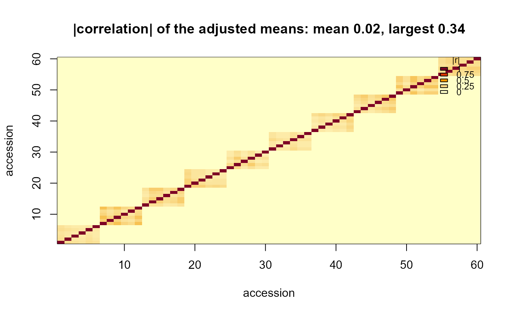
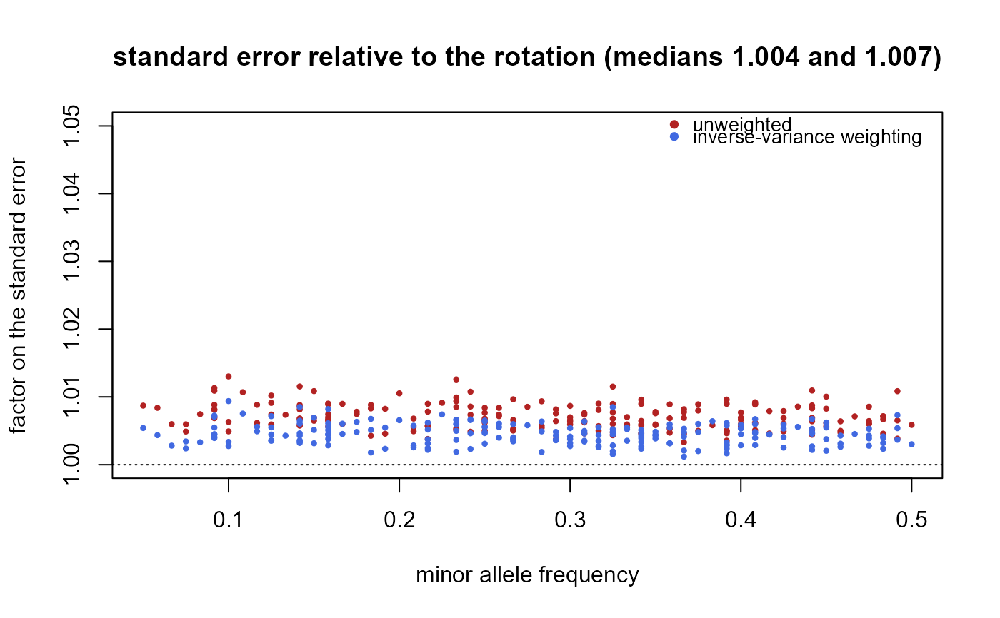
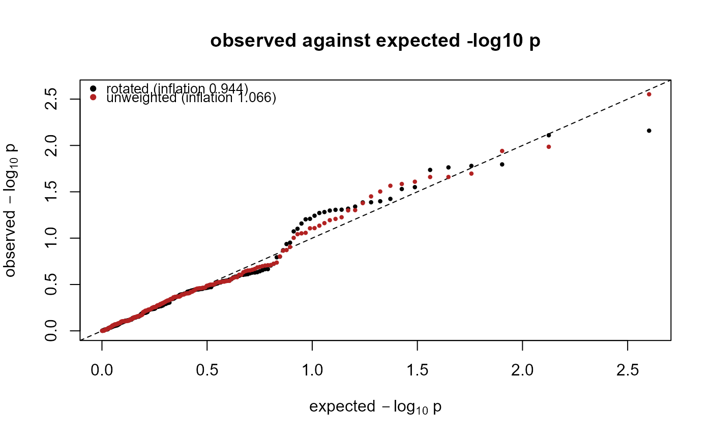
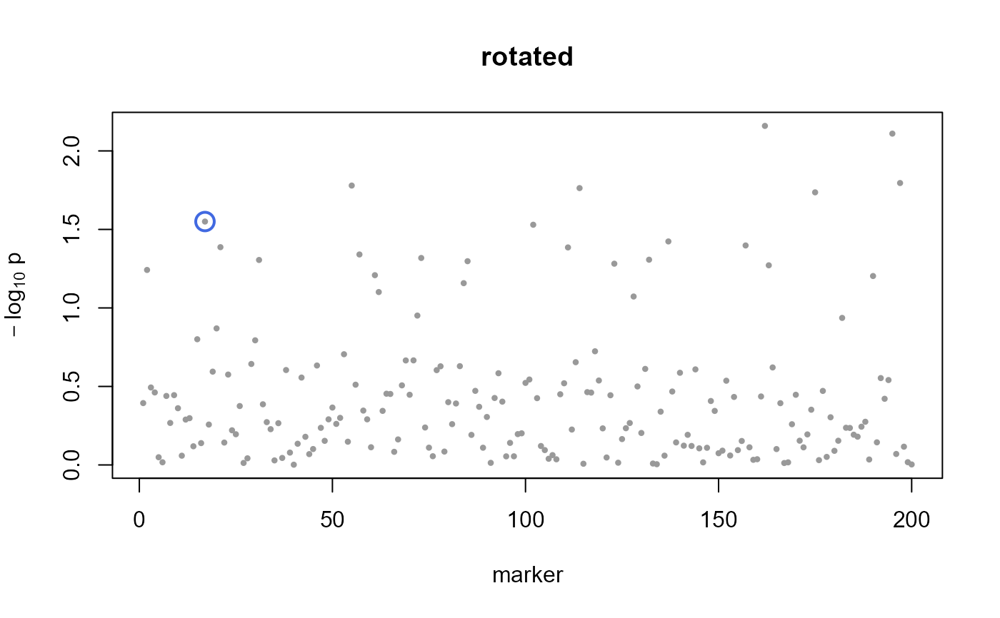
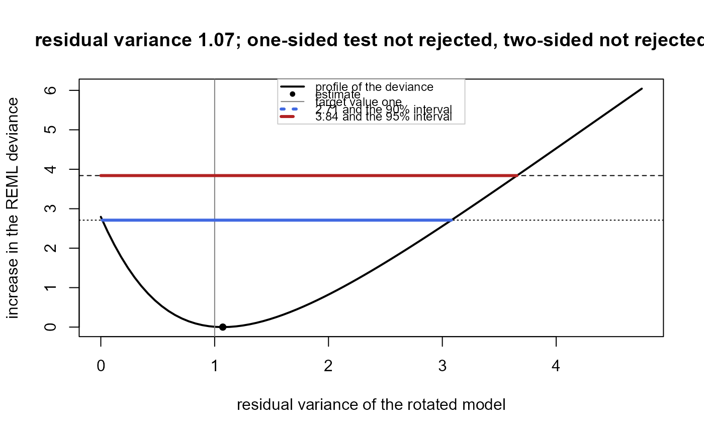

plot() on a rotation object shows the structure of the variance-covariance matrix of the adjusted means: the
absolute correlations as an image in the order of the accessions (type = "correlation"), or the variances along
the accessions (type = "variance").
On an efficiency object it shows the standard-error factor of inverse-variance weighting and of the unweighted
analysis for every marker, against the minor allele frequency (type = "maf") or along the genome
(type = "genome", which needs map).
On a genome_scan object it draws a Manhattan plot per scheme (type = "manhattan", positions from map or the
marker order without one) with the Bonferroni threshold, the significant markers in red and the highlighted
markers circled; or a QQ plot of the observed against the expected \(-\log_{10} p\) of every scheme in the
object (type = "qq"), with the genomic inflation factors in the legend.
On a specification_test object it draws the profile of the REML deviance of the residual variance: the increase
over its minimum as the residual variance moves, with the estimate, the target value one, the one-sided and
two-sided critical values and the 90\
Usage
# S3 method for class 'rotation'
plot(x, type = c("correlation", "variance"), main = NULL, ...)
# S3 method for class 'efficiency'
plot(x, type = c("maf", "genome"), map = NULL, main = NULL, xlab = NULL, ...)
# S3 method for class 'genome_scan'
plot(
x,
type = c("manhattan", "qq"),
map = NULL,
scheme = NULL,
highlight = NULL,
main = NULL,
...
)
# S3 method for class 'specification_test'
plot(x, main = NULL, ...)Arguments
- x
the object.
- type
which plot, see the description.
- main, xlab
titles;
NULLgives the defaults described above.- ...
further graphical parameters for the main plotting call.
- map
optional data frame with the columns
marker,chromosomeandposition(any unit), for the plots along the genome; the chromosomes are drawn in the order of their first appearance inmap.- scheme
for the Manhattan plot, the scheme or schemes to draw, one panel each; by default every scheme in the object.
- highlight
marker names to circle in the Manhattan plot.
Value
the data drawn, invisibly: the absolute correlation matrix or the variances; a data frame of the factors with their x coordinate; a data frame per scheme of the Manhattan coordinates, or a data frame per scheme of expected and observed \(-\log_{10} p\); the profile.
Examples
ex <- rotationGWAS:::toy_trial(n = 60, n_markers = 200, seed = 2)
r <- rotation(ex$means, ex$Omega, ex$relationship, ex$covariates)
plot(r)

plot(efficiency(r, ex$markers))

s <- genome_scan(r, ex$markers, scheme = c("rotated", "unweighted"))
plot(s, type = "qq")

plot(s, scheme = "rotated", highlight = ex$truth$causal)

plot(specification_test(r))
